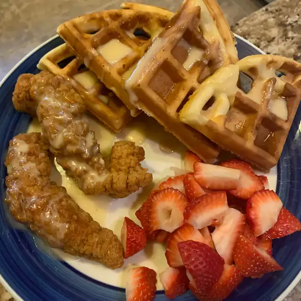

Chicken and Waffles

Description
This recipe has crunch, sweet and spicy, savory all in one.
Ingredients
- 4 eggs
- 1/4 cup heavy cream
- 2 tablespoons cayenne pepper
- 1 tablespoon salt
- 1 tablespoon ground black pepper
- 2 cups all-purpose flour
- 1 cup cornstarch
- 1 quart peanut oil for frying
- 8 chicken tenders
- 1 cup mayonnaise
- 1/4 cup maple syrup
- 2 teaspoons prepared horseradish
- 1 teaspoon dry mustard powder
- 12 slices of bacon
- 8 thin slices of cheddar cheese
- 8 plain frozen waffles
Steps
- Whisk together the eggs, cream, cayenne pepper, 1 tablespoon
salt, and black pepper in a large bowl. In a paper bag, shake
together the flour, cornstarch, and 1 tablespoon salt.
- Dip the chicken into the beaten egg mixture, then place into
the flour mixture and shake to coat. Place the breaded chicken
onto a wire rack; do not stack. Let the chicken rest for 20
minutes to allow the coating to set.
- Heat about 3 inches of oil in a deep-fryer or large saucepan
to 375 degrees F (190 degrees C). In small batches, fry chicken
5 to 8 minutes until golden brown. Remove chicken, and drain on
paper towels. Set aside or keep warm in a a low oven.
- Combine the mayonnaise, maple syrup, horseradish, and mustard
powder in a medium bowl. Place the bacon in a large, deep skillet,
and cook over medium-high heat, turning occasionally, until evenly
browned, about 10 minutes. Drain the bacon slices on a paper towel-
lined plate.
- To assemble the sandwiches: Place 4 waffles on a cookie sheet, top
each waffle with 2 chicken tenders, 3 slices of bacon, and 2 slices
of Cheddar. Broil the sandwich for a 3 to 5 minutes until the cheese
melts. Spread 3 tablespoons of the maple mayonnaise on the remaining
4 waffles and place on top of the sandwich.